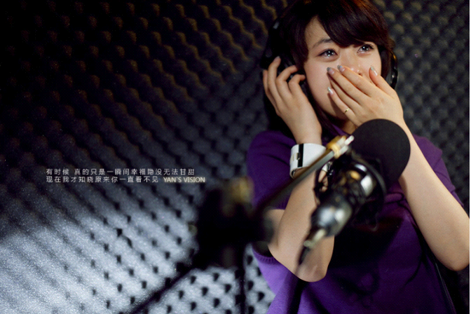
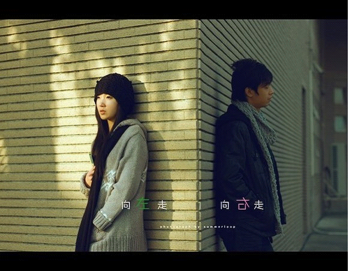
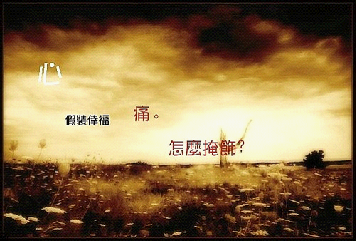

情殇
1.分手后，我还认识你，不过不想再见你，你过的好，我不会祝福你，你过的不好，我不会嘲笑你。因为我们从此陌生。你的世界不再有我，我的世界不再有你。我不能再珍惜你，抱歉，我失去的，也是你失去的。。。
2.很偶尔的，你会找我，联系我，你的突然出现，还是会挑拨我的心弦。只是，我也学会对你伪装了，不冷不热，不咸不淡，笑得没心没肺，也不会再流那廉价的眼泪了。然后听你轻轻地说：“你变了。”、
3.总要等到过了很久，总要等退无可退，才知道我们曾亲手舍弃的东西，在后来的日子里，再也遇不到了。
4.再见了，我那么那么爱你，虽然笨拙，但也努力做了好多，所以我不遗憾了。现在，我把爱情还给你，你把我仅有的一点点骄傲还给我好不好？
5.我还是会相信爱情，只是不会再相信爱情能永远。
6.你突然点醒我，我们相识的时间能够以年计算了，你找到了你爱的，而我，还在原地徘徊着。
7.我们再也不会像以前那样，以彼此为不可替代；我们再也不会像以前那样，那样用力的爱，直到哭了出来。
8.一天，我终于不再思念他，因为他离开太久了，我的习惯已经不再是习惯。
9.一直固执的以为面对什么事情我都能够坦然的微笑，可是，终于在你转身决定离去的一刹那，我泪如泉涌，不可抑制。这是，过往的幸福嘲笑着心中的疼痛，原来，世界上最痛的痛是离开。
10.我赢了所有人，却输掉了你。
11.最浪漫的情话，是当那个已经跟你分手了的情人打电话来问：“你好吗？”你稀松平常的回答：“我很好。”而其实你还爱着他，你一点也不好。

12.有天当你想起我，时间已摆平所有的错，也学会不再问为什么。直到有一天，面对爱情开始吝啬，会不会怀念当初的炙热？一路上经过各自曲折，直到有一天，选某个人相濡以沫。
13.当看破一切的时候，才知道，原来失去比拥有更踏实。
14.有一个人，教会你怎样去爱了，但是，他却不爱你了。
15.与其到处找借口，不如直接说一句我不爱了。
16.没有他我不会不习惯，因为我从来没有习惯拥有他。
17.忘记那个人，不如忘记自己，告诉自己，不是怕他忘记，而是怕他有一天重新把你想起。岁月带走的是记忆，但回忆会越来越清晰。真的有一天，他回过头来告诉你，他一直在惦记你，千万不要相信，因为，他已经不是原来的他，而你，也不再是过去的你。
18.我再也不会奋不顾身的去爱一个人了，哪怕是你。

19.我心里一直有你，只是比例变了而已。
20.现在终于到了要分别的时候，他比我先走，我反而觉得有点欣慰。这样的悲伤，迟早会让我们其中一个人单独体会，就让我来承担好了。
21.望着你离开的背影，我告诉自己要坚强，不哭，是因为爱你，更是因为懂你。
22.我们都这样离散在岁月的风里，回过头去，却看不到曾经在一起的痕迹，尽管，曾今那么用力的在一起过。
23.转弯只为遇见你，却忘记了，你也会转弯。
24.总以为，在最初的地方，有一个最原来的我，就也会有一个最原来的你。
25.你有新欢了，我连旧爱都不是。
26.也许有一天，你回头了，而我却早已，不在那个路口。
27.结局和过程都有了，再去纠缠，连自己都觉得贪婪。
28.忘记你，是为了证明我可以忘记你。
29.撕心裂肺的挽留，不过是心有不甘的表现。
30.第一次的爱，始终无法轻描淡写。
31.没有什么忘不了的，总会在以后的时间忘了你，先忘了你的样子，再忘了你的声音，忘了你说过的话，现在不行，以后也可以。
32.似乎等待了一百年，忽然明白，即使再见面，成熟的表演，不如不见。
33.我知道，忘记是件轻松的事情，只要不看着，不想着，不记着，就忘记了，就像，烟火过后的天空。
